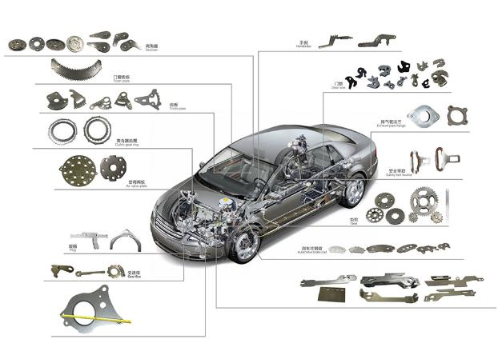
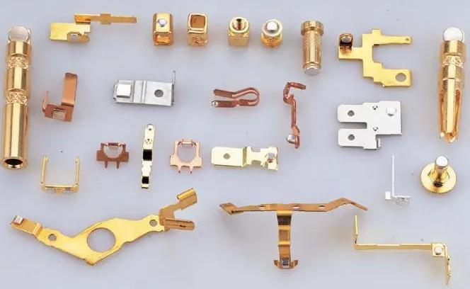
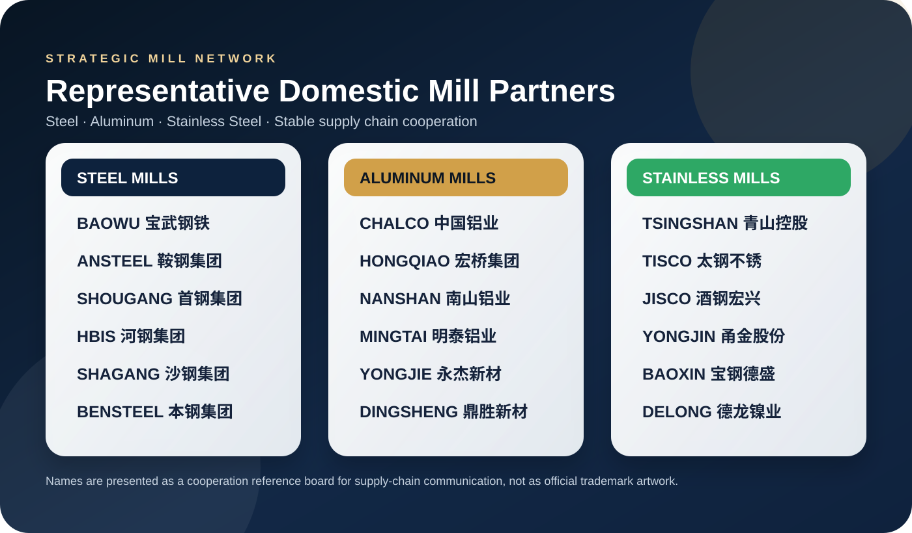

Automotive
特钢：齿轮、弹簧、轴类与结构件
S45C、42CrMo4、65Mn、SCM435 等材料具备高强度、高疲劳寿命和良好热处理响应，适合汽车传动齿轮、悬架弹簧、离合器片、轴类零件和精密冲压结构件。
- 高碳钢和合金钢经过淬火、回火后，可获得更高硬度与抗磨损能力。
- 铬钼、锰系元素提升淬透性和疲劳强度，适合长期受力和高速运转零件。
- 分条和精密剪切后尺寸稳定，便于客户连续冲压和批量装配。
从材料性能到终端零件，帮助客户快速理解为什么这些材料适合汽车、电子与精密制造。
不同材料的强度、导电、导磁、耐腐蚀和轻量化性能，决定了它们在零件上的最佳应用位置。

S45C、42CrMo4、65Mn、SCM435 等材料具备高强度、高疲劳寿命和良好热处理响应，适合汽车传动齿轮、悬架弹簧、离合器片、轴类零件和精密冲压结构件。

AL6061、AL6063、AL5052、AL7075 兼具轻量化、导热、耐腐蚀和加工性能，常用于新能源电池结构件、电子产品外壳、散热器、支架和汽车轻量化零件。

无取向和取向矽钢片具有低铁损、高磁感和稳定涂层，是电机、变压器、压缩机和家电马达的核心材料。

SUS301、SUS304、SUS316、SUS430 等材料兼具耐腐蚀、强度、成形性和表面美观度，适合电子连接件、家电面板、汽车排气系统、医疗器械和精密弹片。

黄铜、磷铜、白铜和铜合金带材具有优异导电性、导热性、弹性和可冲压性，广泛用于电子端子、连接器、开关弹片、屏蔽件和热交换部件。
客户选材时最关心的是零件失效风险、加工效率、批量一致性和成本。KSC 从材料牌号、规格、加工方式和交付节奏上协同支持。
齿轮、弹簧、离合器片、座椅结构件、电池包结构、散热件和排气系统，需要材料同时满足强度、疲劳寿命、耐热、耐腐蚀和轻量化要求。
连接器、端子、屏蔽罩、弹片、手机/电脑外壳、散热片和电源模块，重点关注导电、导热、弹性、表面处理和精密冲压稳定性。
电机定转子、变压器铁芯、压缩机马达和发电机部件，核心指标是低铁损、高磁感、涂层绝缘性和冲片后的叠片一致性。
通过与国内主流材料工厂保持长期沟通和供应协作，KSC 能在牌号、规格、交期和质量稳定性上为客户提供更确定的采购体验。

注：图中为供应链沟通中常见的合作资源名称展示，用于说明材料来源网络，不代表官方商标授权图形。
把零件用途、厚度、硬度、表面要求和年用量发给我们，KSC 可以协助推荐材料牌号和加工方案。